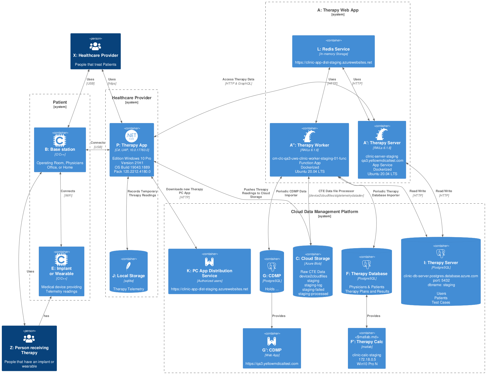

Company Documentation
Generated on:
Introduction
This is the introduction section, reused across multiple documents.
Chapter 1
Content for chapter 1 goes here.
Chapter 2
Content for chapter 2 goes here. Here’s an image:
 —
Confidential – Do not distribute without permission.